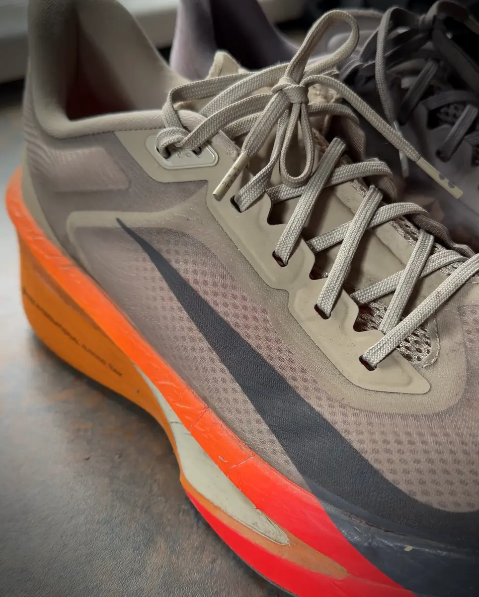
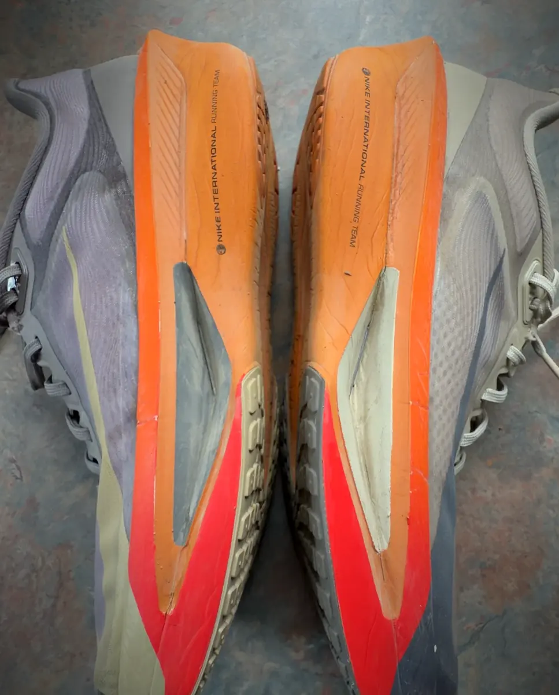

Nike Zoom Fly 6
Review
A 100 kg runner’s verdict after a half marathon, full marathon and 63 km ultramarathon.
The Nike Zoom Fly 6 was my first serious running shoe—and it became the shoe that carried me from my first half marathon to a full marathon and eventually through the 63 km Connemara Ultra. Across all three distances, I never developed a blister.
For me, that matters more than a laboratory score or a few fast kilometres during a test run. I trusted this shoe through the longest and most demanding events of my life, and it never gave me a reason to question that decision.
Testing summary
- Runner
- Andrew McNamara
- Runner profile
- Approximately 100 kg strength athlete transitioning into endurance sport
- Shoe
- Nike Zoom Fly 6
- Primary use
- Road training, racing and long-distance events
- Events completed
- First half marathon · Great Limerick Marathon · 63 km Connemara Ultra
- Blisters experienced
- None
- Purchased personally
- Yes
- Brand relationship
- None at the time of review
Technical overview
According to Nike, the men’s Zoom Fly 6 weighs approximately 265 grams in a UK size 9 and has an 8 mm heel-to-toe drop.
The shoe combines responsive ZoomX foam with a full-length carbon-fibre Flyplate. Nike positions it as a versatile road shoe suitable for both race preparation and race day.
Those specifications explain the shoe on paper. This review is about what happened when I placed an approximately 100 kg runner on top of it and asked it to handle a half marathon, full marathon and ultramarathon.
From strength athlete to endurance runner
I didn’t enter running with the traditional build or background of a distance athlete.
I came from more than 15 years of strength and conditioning. At approximately 100 kg, I carried considerably more body mass than the runners normally featured in endurance-shoe advertising.
When larger athletes look for running shoes, our questions can be different.
Will the cushioning still feel protective when more force passes through it? Will the shoe remain comfortable after several hours? Will the upper create pressure or friction as the feet begin to swell? Will it feel unstable when fatigue changes running form?
Most shoe reviews cannot answer those questions for someone built like me.
The Zoom Fly 6 can’t guarantee the same experience for every heavier runner, but it gave me something valuable: a genuine example of a performance-focused shoe surviving progressively harder tests under a 100 kg athlete.
First impressions
The Zoom Fly 6 was my first serious running-shoe purchase. I didn’t buy it because I was already an experienced runner who understood every type of foam, plate or rocker geometry.
I bought it while entering a completely different sporting world.
What followed became far more important than my first impression. Instead of testing the shoe for a handful of sessions and immediately giving a verdict, I continued using it as the distances increased and the challenges became more serious.
It went from being a new pair of running shoes to becoming part of my endurance story.
The ride
The combination of ZoomX foam and the full-length carbon-fibre plate gives the Zoom Fly 6 a performance-oriented feel without limiting it to one single race distance.
From my experience, its greatest strength was versatility.
It was the shoe I could use while developing as a runner and then continue trusting as I progressed toward longer events. I didn’t need one shoe to validate me as a half-marathon runner and another one to make me feel ready for a marathon.
The same model remained part of the journey as my ambitions grew.
A carbon plate should not be treated as a replacement for appropriate training, strength, recovery or running mechanics. However, the Zoom Fly 6 gave me a platform that felt suitable for purposeful training and long-distance racing.
Fit, comfort and blister experience
Fit is individual, and I won’t claim that one shoe shape will work for every foot.
What I can say is that my personal experience was exceptional: I completed a half marathon, full marathon and 63 km ultramarathon in the Zoom Fly 6 without developing a blister.
That is the most significant comfort result in this review.
A shoe can feel excellent during a short fitting and become completely different after several hours. Heat, sweat, repeated impact and natural foot swelling can expose problems that are impossible to identify while standing in a shop.
The Zoom Fly 6 passed those real-world tests for me.
That doesn’t mean the shoe alone prevented every possible foot issue. Sock choice, lacing, foot preparation and race conditions also matter. But the shoe never became the source of a blister problem throughout my three major events.

First half-marathon experience
My first half marathon represented the moment the Zoom Fly 6 moved beyond being a training purchase and became a shoe I trusted on race day.
At that stage, I was still learning how my body responded to sustained distance. Finishing the event comfortably enough to continue building toward larger goals gave me confidence in both my preparation and equipment.
The shoes completed the distance without creating the foot problems many new runners fear. There were no blisters and no reason to abandon them before the next challenge.
That first half marathon became the foundation for everything that followed.
Great Limerick Marathon
A full marathon is a very different test.
Over 42.2 km, minor discomfort can become a major problem. A small area of rubbing can develop into a blister, and a questionable fit can become increasingly difficult to ignore as fatigue builds.
I wore the Zoom Fly 6 for the Great Limerick Marathon and completed the full distance without a blister.
For an approximately 100 kg runner, that result gave me enormous confidence in the shoe. It had now handled more than twice the distance of my first half marathon while continuing to provide the comfort and security I needed.
The marathon also proved that the shoe wasn’t useful to me only for faster or shorter running. It could remain on my feet for a prolonged endurance effort without becoming the weak link in the system.
The Great Limerick Marathon transformed the Zoom Fly 6 from a shoe I liked into a shoe I genuinely trusted.
Connemara Ultra 63 km
The Connemara Ultra was the decisive test.
Sixty-three kilometres introduces another level of physical and mental demand. Time on feet increases, running form changes under fatigue, and every element of equipment has more opportunity to cause trouble.
I chose the Zoom Fly 6 again.
Completing the Connemara Ultra in the same shoe model I had used for my first half marathon created a full-circle moment. The shoe had been present from my earliest distance-running milestone through to becoming an ultramarathon finisher.
Most importantly, I finished the 63 km event without a blister.
That does not automatically make the Zoom Fly 6 the perfect ultramarathon shoe for every runner. Connemara is also a road ultra, and runners tackling technical trails will require different grip, protection and stability considerations.
But for my body, feet and event, the Zoom Fly 6 handled the distance.
That is the strongest recommendation I can give it.Connemara Ultra, 63 km
Performance for a 100 kg runner
Larger runners are frequently directed toward heavy, highly cushioned daily trainers, almost as though body weight should prevent us from considering a more performance-oriented shoe.
My experience challenges that assumption.
At approximately 100 kg, I used the Zoom Fly 6 across three significant endurance distances. The shoe allowed me to experience responsive, plated footwear without feeling that this category was reserved exclusively for lighter or faster athletes.
That doesn’t mean every 100 kg runner should immediately buy a carbon-plated shoe. Running history, foot shape, injury profile, mechanics and intended use still matter.
It does mean bigger runners deserve to be included in the conversation.
The relevant question is not simply, “Am I too heavy for this shoe?”
A better question is: does this shoe work for my body, my mechanics and the type of running I actually intend to do?
For me, the answer was yes.
What I liked
- Comfortable across half-marathon, marathon and ultramarathon distances
- No blisters during any of my three major events
- Performance-focused construction without being restricted to short races
- Suitable for both training and race-day use in my experience
- Responsive platform combining ZoomX foam and a carbon-fibre plate
- Gave me confidence as my distances progressed
- Proved that a 100 kg runner can benefit from performance-oriented footwear
Important considerations
- My experience does not guarantee the same fit for every runner
- Foot shape, lacing, socks and race preparation affect blister outcomes
- Runners should build into plated footwear gradually
- A carbon plate cannot replace appropriate conditioning or sensible progression
- This is a road shoe, not a technical trail-running shoe
- I have not included an exact durability figure because my verified total mileage has not been recorded for this review
- Runners with specific injury concerns should choose footwear based on individual assessment rather than online reviews alone

Who is it for?
Based on my experience, the Nike Zoom Fly 6 may suit:
- Runners seeking one shoe for purposeful training and race day
- Strength athletes moving into endurance running
- Larger runners who want something more responsive than a traditional heavy daily trainer
- Half-marathon and marathon runners
- Road ultrarunners whose feet agree with the fit
- Runners who want to experience a carbon-plated shoe without reserving it exclusively for their fastest races
Who may need something different?
Another option may be more appropriate if:
- You need a genuinely wide or highly accommodating fit
- You primarily run technical trails
- You prefer a completely flexible, non-plated shoe
- You require specific stability features
- You have not yet built enough running volume to introduce performance footwear responsibly
Final verdict
The Nike Zoom Fly 6 didn’t simply perform well during a short test period. It became part of my transformation from a strength athlete into an endurance athlete.
I ran my first half marathon in it. I completed the Great Limerick Marathon in it. I became a 63 km Connemara Ultra finisher in it.
And across all three events, I never developed a blister.
No running shoe is universally perfect, and I won’t pretend that my experience guarantees the same result for everybody. But when people ask me whether I genuinely trust the Zoom Fly 6, I can answer with more than marketing language.
I can answer with the miles.Andrew McNamara
For this approximately 100 kg runner, the Nike Zoom Fly 6 proved comfortable, versatile and capable of going far beyond the distance I originally imagined I could run. It wasn’t just my first serious running shoe. It was the shoe that came with me while I became a runner.
This review is based on genuine personal use. I purchased and used the Nike Zoom Fly 6 independently and had no commercial relationship with Nike when these experiences took place.
If an affiliate link is added to this page in the future, Iron Miles may receive a commission from qualifying purchases at no additional cost to the reader. Commercial relationships do not determine our verdicts.
Runner’s note
Every runner is different. A shoe that worked exceptionally well for me may feel different depending on your foot shape, running mechanics, training history and intended use. Whenever possible, try the shoe and introduce it gradually before using it for a major event.

Strength athlete turned endurance runner. Came to running at around 100 kg and kept going — half marathon, the Great Limerick Marathon, and the 63 km Connemara Ultra. Coaches and runs with the Iron Miles Club in Limerick.